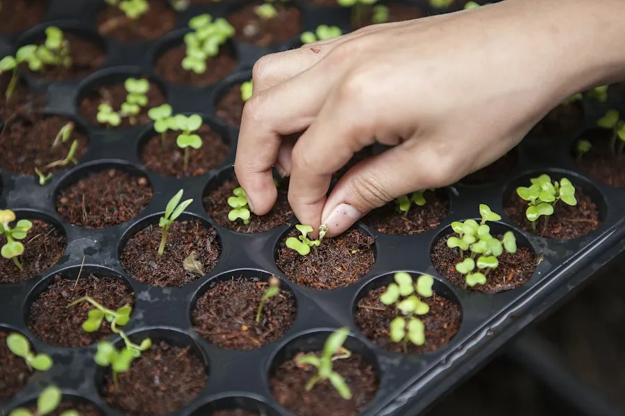
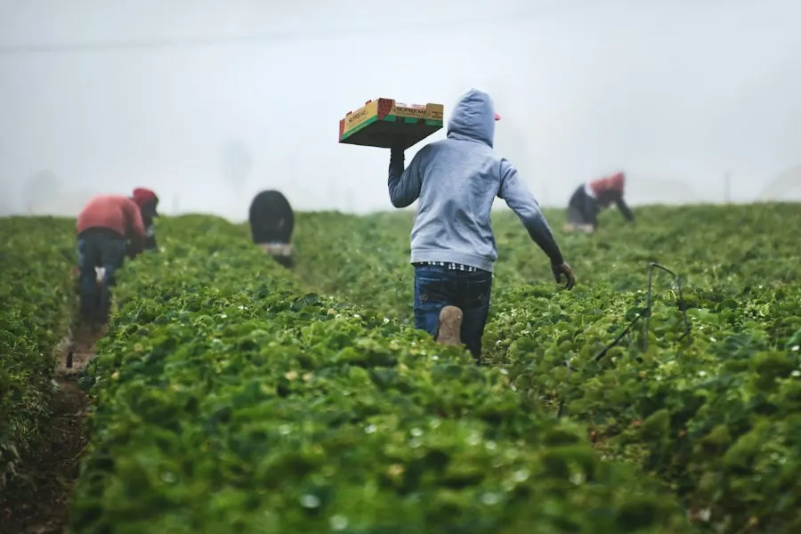

Complete Solutions For Modern Agronomy
We support agricultural enterprises across the entire lifecycle: soil regeneration, crop telemetry, organic pest barriers, and cold-chain wholesale distribution.
Explore Our Specialized Agricultural Domains
Each service operates with empirical scientific rigor, dedicated agronomists, and full data traceability.

1. Organic Crop Production
Non-GMO heirloom seeds cultivated in multi-tier microbial bio-soils with zero synthetic nitrogen or pesticides. We specialize in ancient grains, rotational pulses, greenhouse berries, and high-potency botanicals.
Learn More About Crops ➔2. Precision Smart Farming
Harnessing multispectral satellite vegetative indices (NDVI), drone mapping, and LoRaWAN soil moisture probes to optimize water delivery and detect plant stress 10 days before visible symptoms appear.
Explore Precision Agtech ➔
3. Ethical Livestock Management
Rotational pasture grazing, veterinary health profiling, and holistic animal welfare producing premium certified A2 whole milk, organic ghee, free-range poultry, and artisan aged cheeses.
Explore Livestock Care ➔4. Direct Produce Supply Chain
From on-field harvest dispatch to solar refrigerated transport and wholesale distribution hubs. Real-time temperature tracking and instant laboratory certificates for institutional buyers.
Explore Supply Chain ➔Solar Micro-Drip Irrigation Systems
Water is agriculture's most precious resource. Our automated solar-powered irrigation infrastructure delivers precise drops directly to crop root zones, reducing evaporative loss by up to 64% while maintaining optimum hydraulic tension.
Solenoid valves trigger only when soil water potential drops beneath root uptake thresholds, avoiding waterlogged soil compaction.
100% solar PV pump array operating autonomously during peak daylight hours with smart rainwater harvesting basin recharge.


Native Apiary Sanctuaries & Wildflower Corridors
Healthy bees signify healthy soil. Stackly preserves dedicated wildflower corridors and maintains 350+ native honeybee colonies across our farming plots.
The result is a double blessing: cross-pollination enhances fruit set density by up to 35%, while yielding our coveted raw mountain wildflower honey batches.
Learn About Bio-Pollination Protocols ➔Microbiome Profiling & Carbon Sequestration
Our on-site agronomy laboratory analyzes biological soil health down to the microscopic level. We calculate active fungal-to-bacterial biomass ratios, cation exchange capacity (CEC), and organic soil carbon percentages.
- ✓ Soil Food Web Inoculation: Custom aerated compost teas brewed with beneficial mycorrhizae and Trichoderma fungi.
- ✓ Carbon Credit Verification: Empirical soil core sampling measuring stable humic carbon accumulation year over year.

Our 5-Stage Scientific Agronomy Workflow
A systematic methodology transforming depleted agricultural land into high-yield regenerative acreage.
Soil Baseline Audit
Deep-core GPS soil sampling analyzing mineral deficiencies, biological microbe diversity, and pH gradients.
Custom Crop Blueprint
Formulation of multi-species cover crop seed cocktails, companion planting schedules, and organic nutrient plans.
IoT & Telemetry Deployment
Installation of solar LoRaWAN soil moisture probes, automated weather stations, and drone flight mapping routes.
Biological Cultivation
Foliar micro-nutrient feedings, beneficial predator insect releases, and automated drip irrigation scheduling.
Cold Dispatch & Audit
Solar pre-cooling within 2 hours of harvest, GC-MS chemical residue lab clearance, and refrigerated fleet dispatch.
Field-Proven Hardware & Sensor Specifications
Industrial-grade agricultural sensors engineered to withstand extreme field temperatures and monsoons.
LoRaWAN Soil Probes
Multi-depth dielectric permittivity measurement up to 100 cm depth with 15 km wireless range.
Multispectral UAVs
5-band radiometric calibrated optics capturing NDVI, NDRE, and high-resolution thermal stress maps.
Reefer Telematics
Continuous cellular 4G temperature & humidity logging inside refrigerated shipping compartments.
Solar Smart Valves
Battery-backed solar motorized ball valves with pressure feedback and anti-clogging blowouts.
Certified To Global Agricultural & Food Safety Standards
Every acre under Stackly management undergoes rigorous third-party auditing and documentation.
NPOP Certified
National Programme for Organic Production compliance across all crops.
USDA Organic
Certified equivalent for direct export and institutional food manufacturing.
ISO 22000
HACCP-based food safety management throughout cold storage and transit.
Water Stewardship
Alliance for Water Stewardship Gold rating for micro-basin conservation.